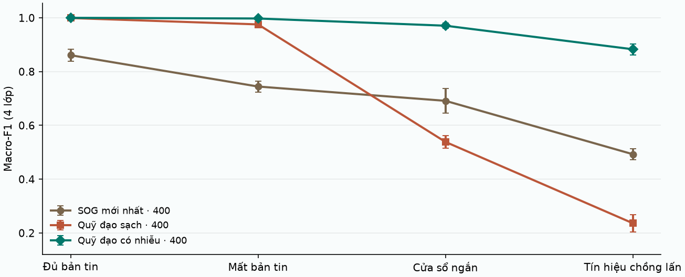

Kiểm chứng mô-đun hành vi
Đề Chặng 2 yêu cầu tách đóng góp của bộ ước lượng Kalman, đối chiếu kích thước và dữ liệu hành vi, rồi kiểm tra ảnh hưởng của gợi ý AI lên thao tác rà.
5 seed4 kịch bản ghép và 4 mức chất lượng quỹ đạo
3 → 0cặp ghép sai trên 4.800 mục tiêu mô phỏng
0,236 → 0,883macro-F1 khi tín hiệu chồng lấn, cùng 400 mẫu học
Kalman và kiểm tra kích thước
| Cấu hình | Cặp đúng | Cặp sai | Từ chối | Mâu thuẫn đúng / tổng¹ | Cờ nhầm¹ |
|---|---|---|---|---|---|
| Tuyến tính · tắt kích thước | 1.229 | 3 | 3.568 | 0/413 | 0 |
| Tuyến tính · có kích thước | 1.229 | 3 | 3.568 | 387/413 | 20 |
| Kalman · tắt kích thước | 1.239 | 0 | 3.561 | 0/418 | 0 |
| Kalman · có kích thước | 1.239 | 0 | 3.561 | 393/418 | 23 |
¹ Trên cặp ghép đúng. Kịch bản hộp radar nhiễu mạnh có 85/110 mâu thuẫn được phát hiện, 25 bỏ sót và 23 cờ nhầm với Kalman và kiểm kích thước. Dữ liệu mô phỏng.
Dữ liệu huấn luyện hành vi

| Dữ liệu học | Đủ bản tin | Mất bản tin | Cửa sổ ngắn | Chồng lấn |
|---|---|---|---|---|
| SOG mới nhất · 400 | 0,861 ± 0,022 | 0,745 ± 0,020 | 0,691 ± 0,045 | 0,493 ± 0,020 |
| Quỹ đạo sạch · 48 | 0,997 ± 0,004 | 0,993 ± 0,006 | 0,810 ± 0,043 | 0,321 ± 0,018 |
| Quỹ đạo sạch · 400 | 0,999 ± 0,002 | 0,976 ± 0,012 | 0,539 ± 0,023 | 0,236 ± 0,032 |
| Quỹ đạo có nhiễu · 400 | 1,000 ± 0,000 | 0,997 ± 0,004 | 0,971 ± 0,010 | 0,883 ± 0,021 |
| Sạch và nhiễu · 800 | 1,000 ± 0,000 | 0,996 ± 0,004 | 0,974 ± 0,014 | 0,889 ± 0,010 |
Trung bình ± độ lệch chuẩn trên 5 seed. Nhãn từ trình sinh quỹ đạo. Chưa có nhãn hành vi ngoài thực địa đã xác nhận.
Rà với và không có gợi ý AI
Hai lượt, mỗi lượt 8 ca mô phỏng, đổi thứ tự và điều kiện theo mã người rà. Thời lượng, ca bỏ sót và cờ nhầm được tính từ phiếu thực tế.
| Nhóm | Số phiếu | Bỏ sót không / có AI | Chênh giây có − không AI |
|---|---|---|---|
| Chuyên viên tự khai | 0 | Chưa có phiếu | Chưa ước tính |
| Thử nghiệm sơ bộ | 0 | Chưa có phiếu | Chưa ước tính |